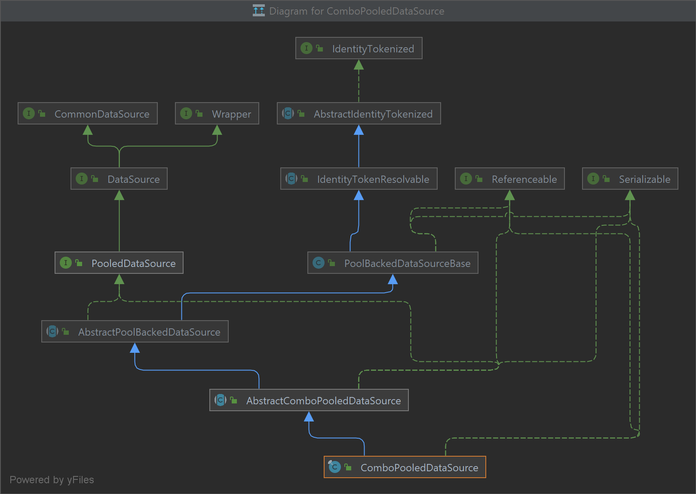
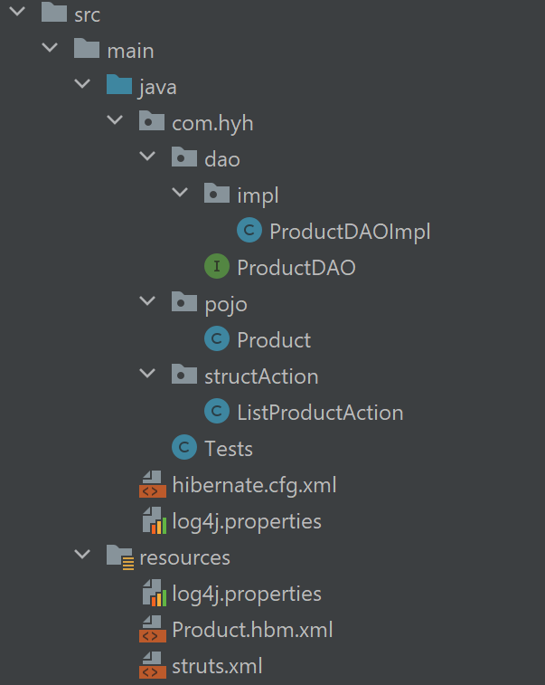
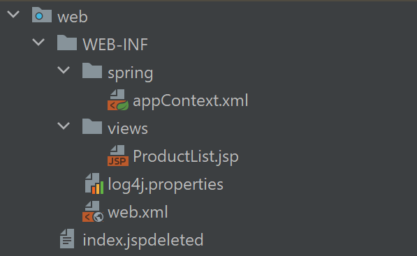
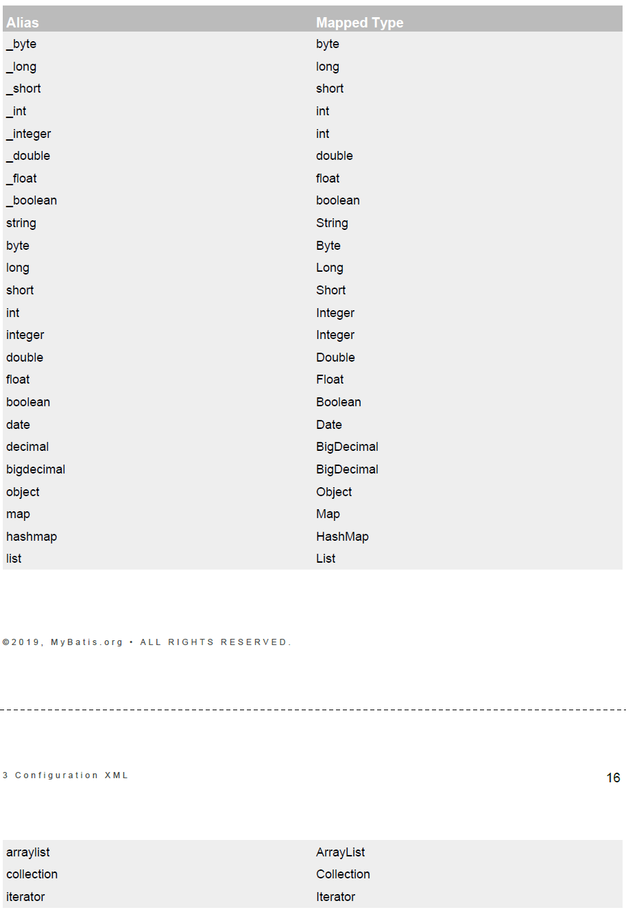
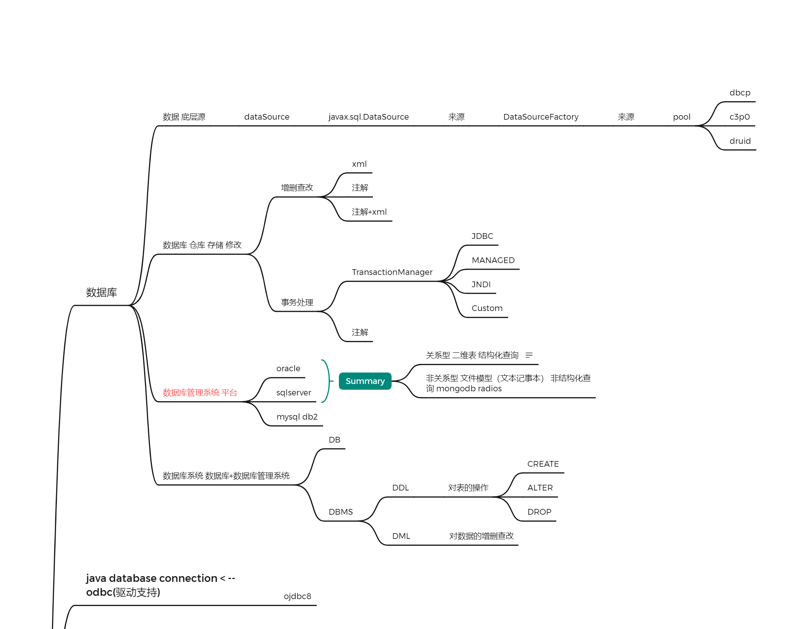
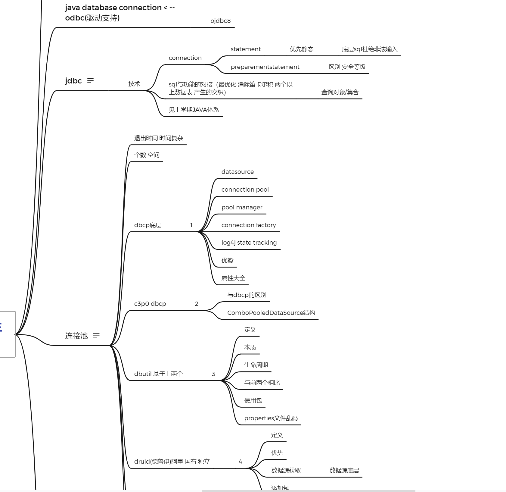
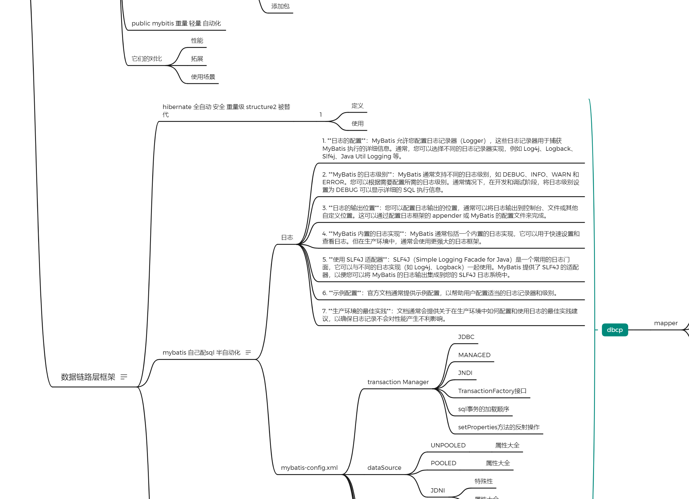
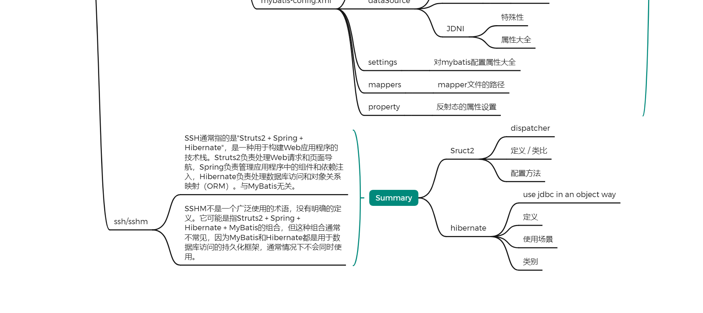
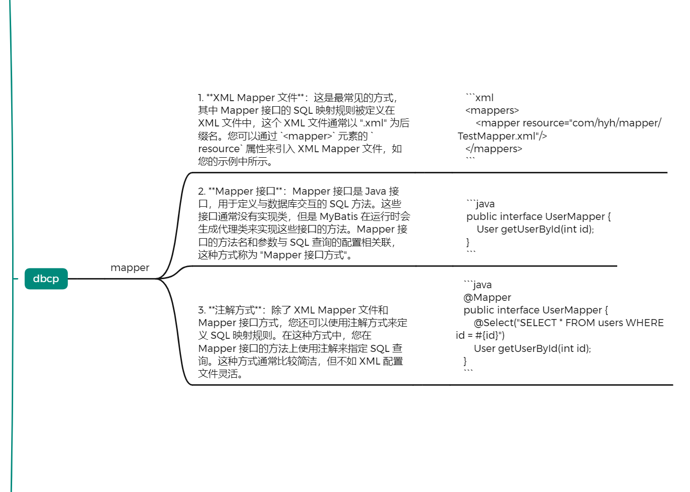

1.这个网页多一个人看都是错的 /爱心
2.当一个人感觉无聊的时候，它就会感觉很无聊。
参考：文心一言 讯飞星火 chatGPT MYBATIS白皮书 gamma.app(bilibili)
https://www.tutorialspoint.com/mybatis/mybatis_annotations.htm
https://blog.csdn.net/weixin_51725434/article/details/128396111
https://howtodoinjava.com/log4j2/log4j2-properties-example/
spring transaction: https://www.digitalocean.com/community/tutorials/spring-transaction-management-jdbc-example
https://blog.csdn.net/xcnaabb/article/details/130102571
mapper SQL process: https://blog.csdn.net/weixin_44451022/article/details/128641020
source Code: https://github.com/mybatis/spring/blob/master/src/main/java/org/mybatis/spring/transaction/SpringManagedTransactionFactory.java
德鲁伊：https://blog.csdn.net/qq_15204179/article/details/83050229
数据库操作：mybatis中实现数据库增删查改的mapper一共有三种方式
1.通过xml方式
这是最常见的方式，其中 Mapper 接口的 SQL 映射规则被定义在 XML 文件中，这个 XML 文件通常以 ".xml" 为后缀名。您可以通过 `<mapper>` 元素的 `resource` 属性来引入 XML Mapper 文件。
2.通过注解的方式
可以使用注解方式来定义 SQL 映射规则。在这种方式中，您在 Mapper 接口的方法上使用注解来指定 SQL 查询。这种方式通常比较简洁，但不如 XML 配置文件灵活。
3.通过实现接口结合xml的方式
该接口，用于定义与数据库交互的 SQL 方法。这些接口通常没有实现类，但是 MyBatis 在运行时会生成代理类来实现这些接口的方法。Mapper 接口的方法名和参数与 SQL 查询的配置相关联，这种方式称为 "Mapper 接口方式"。
1. mybatis增删查改:通过xml方式
Mapper.xml文件
mybatis配置文件
property文件设置
· 利用resource属性添加文件名
· 利用property name="" value=''子项，添加属性
测试文件
2. mybatis增删查改:通过注解方式
使用包：
因为之前已经载入了很多其它的包，所以没有采用maven，包的搜索网址为：
https://search.maven.org/search
spring-orm: 用于将对象模型与关系数据库之间的数据进行映射和转换，解决它们之间数据表示不匹配的问题，具有sql语言对象化，自动化数据访问，多数据库支持，简化代码提高效率的特点
mybatis-spring
mybatis
ojdbc8
annotation Interface
测试
3. mybatis增删查改：通过接口结合xml文件的方式
- mapper接口的全类名和映射文件的命名空间(namespace)保持一致
- mapper接口中方法的方法名和映射文件中编写SQL的标签的id属性保持一致
中途遇到的问题：out文件夹的内容没有跟着更新需要手动复制进去/out文件夹没有.class文件，删除out重新生成 ---编译器IDEA
没有设置数据库名称(测试方法效率不高)
接口文件
mapper.xml文件与上一个mapper的差别
输出文件
对mybatis-config.XML文件的解释之TransactionManager
白皮书翻译（CHATGPT + HYH）P24
事务管理器
MyBatis包含两种事务管理器类型（即type="[JDBC|MANAGED]"）：
·JDBC - 这个配置简单地直接使用JDBC的提交（commit）和回滚（rollback）功能。它依赖于从dataSource获取的连接来管理事务的范围。
·MANAGED - 这个配置几乎什么都不做。它不会提交或回滚连接。相反，它会让容器管理事务的完整生命周期（例如，在JEE应用服务器上的上下文）。默认情况下，它会关闭连接。但是，有些容器不希望这样做，因此如果您需要阻止它关闭连接，请将"closeConnection"属性设置为false。例如：
JEE应用服务器上是JNDI(Java Naming and Directory Interface）上下文(context))，通俗地理解，Spring Web应用程序是部署在JEE应用服务器上的。
【注意】如果您计划在Spring中使用MyBatis，就不需要配置任何TransactionManager，因为Spring模块会设置自己的TransactionManager，覆盖任何之前设置的配置。
·这两种TransactionManager类型都不需要任何属性配置。然而，它们都是类型别名（Type Aliases）。换句话说，您可以使用自己的完全限定类名或类型别名来引用您自己实现的TransactionFactory接口。
TransactionFactory接口
source Code:
https://github.com/mybatis/spring/blob/master/src/main/java/org/mybatis/spring/transaction/SpringManagedTransactionFactory.java
> 如果设置失败，检查可能是mybatis-config.xml路径问题，可能迁移了项目但是没有修改参数，可以输出文件流查看
+ 以下为自定义接口实现：
- mybatis-config.xml文件
- Transaction接口实现
DBUtil类
- 测试
- 输出
可以得出sql事务的加载顺序为：
getConnection ---> check timeout ---> roll back / commit ---> close
XML 中配置的任何属性都会在实例化后传递给 setProperties() 方法。你的实现还需要创建一个 Transaction 实现，这也是一个非常简单的接口：getConnection() commit() rollback() close() getTimeout() + 上面有实现
使用上面两种接口，你可以完全自定义mybatis处理事务的方式。
对mybatis-config.XML文件的解释之dataSource
dataSource 元素配置了使用标准 JDBC DataSource 接口的 JDBC 连接对象的源头。
• 大多数 MyBatis 应用程序将配置一个如示例中的 dataSource。然而，这不是必需的。请注意，如果要支持延迟加载，则必须配置dataSource。
内置了三种 dataSource 类型（即 type="[UNPOOLED|POOLED|JNDI]"）：
（总结部分）
UNPOOLED: 每次请求时都会打开和关闭连接，适用于不需要高可用连接（随用随连）的简单应用程序以及对性能要求不高的数据库。
- UNPOOLED DataSource 具有以下属性：driver[class of JDBC driver] url username password
• defaultTransactionIsolationLevel – 连接的默认事务隔离级别。
# NONE 数据库默认隔离级别
# READ_UNCOMMITED 可以读取未提交数据的更改，可能导致脏读/不可重复读/幻读。
# READ_COMMITTED 只能读取已提交数据的更改，可能不可重复读/幻读。
# REPEATABLE_READ 在同一事务中多次读取相同数据时，数据保持一致，可能幻读。
# SERIALIZABLE 事务会锁定访问的数据，什么都不可能发生，但是会导致性能下降，并发受到限制。
- 脏读：主要是因为没有提交。
- 不可重复读：行内容对不上。不可重复读发生在一个事务在多次读取同一行数据时，得到了不同的结果。这是因为在事务执行期间，另一个事务修改了同一行数据。
- 幻读：行数量对不上。幻读发生在一个事务在同一个查询中多次执行时，发现了不同数量的行。这是因为在事务执行期间，另一个事务插入或删除了符合查询条件的行。
• defaultNetworkTimeout – 默认等待数据库操作完成的时间（以毫秒为单位）。
* 您还可以将属性传递给数据库驱动程序。要做到这一点，请使用 driver. 前缀，例如：
# driver.encoding=UTF8
这将通过 DriverManager.getConnection(url, driverProperties) 方法将属性 encoding 的值设置为 UTF8，传递给您的数据库驱动程序。
POOLED - 此实现的 DataSource 使用连接池来避免创建新的 Connection 实例所需的初始连接和身份验证时间。这是用于并发Web应用程序以实现最快响应的常见方法。
属性：
# poolMaximumActiveConnections - 此属性表示在任何给定时间可以存在的活动（即正在使用的）连接数。默认值：10
# poolMaximumIdleConnections - 可以在任何给定时间存在的空闲连接数。
# poolMaximumCheckoutTime - 这是在被强制结束之前，连接可以自行登出的最大时间。默认值：20000毫秒（即20秒）
# poolTimeToWait - 这是一个低级别设置，设置后，如果获得连接的时间过长，连接池才有机会打印日志状态并进行重试。（以免配置不正确导致启动失败却无报错无重试）。默认值：20000毫秒（即20秒）
# poolMaximumLocalBadConnectionTolerance - 这是有关线程获得坏连接的容忍度的低级别设置。如果线程获得了坏连接，它仍然可以有另一次尝试获取另一个有效连接的机会。但是，重试次数不应超过 poolMaximumIdleConnections 和 poolMaximumLocalBadConnectionTolerance 的总和。默认值：3（自3.4.5版本以来）
# poolPingQuery - Ping查询用于验证连接是否正常工作并准备接受请求。默认值为 "NO PING QUERY SET"，这将使大多数数据库驱动不正常工作的时候显示合理的错误消息，所以非必要不要更改。
# poolPingEnabled - 这启用或禁用ping查询。如果启用，您还必须将 poolPingQuery 的值设置为有效的SQL语句（最好是执行快速的）。默认值：false。
# poolPingConnectionsNotUsedFor - 这配置了池将使用 poolPingQuery 的频率。可以与数据库连接的最大超时时间相同，以避免不必要的ping。默认值：0（即每次都会ping所有连接 - 但前提是 poolPingEnabled 为true）。
JNDI - 此 DataSource 实现适用于容器，如EJB或应用程序服务器，它们可以在JNDI上下文中配置DataSource并放置对它的引用，用于告诉 MyBatis 使用 JNDI 来查找和获取数据源。此DataSource配置仅需要两个属性：
# initial_context - 用于从 InitialContext 里查找上下文([Context])（即 initialContext.lookup(initial_context)）。此属性是可选的，如果省略，则将直接从 InitialContext 里直接查找 data_source 属性。
# data_source - 数据源实例的引用所在的上下文路径。它将针对由 initial_context 找到的上下文[Context]进行查找，如果没有提供 initial_context 属性，则将直接从 InitialContext 里查找。
* 与其他DataSource配置类似，可以通过在属性前缀 env. 来将属性直接发送到 InitialContext，例如：
# env.encoding=UTF8
这将把属性 encoding 的值作为 UTF8 直接发送到 InitialContext 构造函数。
您可以通过实现 org.apache.ibatis.datasource.DataSourceFactory 接口来插入任何第三方DataSource。
添加包：c3p0-0.9.5.5.jar mchange-commons-java-0.2.20.jar
自定义接口 dataSourceFactoryImpl/DataSourceFactoryImpl
mybatis-config.xml不同的部分
mybatis-config.xml对UNPOOLED，POOLED和JNDI的属性应用
org.apache.ibatis.datasource.unpooled.UnpooledDataSourceFactory 可以作为构建新的数据源适配器的父类使用。
- C3P0DataSourceFactory类
* mybatis-config.xml和上面的一样
JNDI的应用(spring + mybatis)：是对容器设置的应用
JNDI在mybatis中底层连接池就是DBCP(2)，详情看
这里
* context.xml！！！！！！这个文件一定在tomcat安装路径下的conf里contex.xml添加，也就是是tomcat容器本身的环境配置
- 对web.xml的修改也是在tomcat目录下修改
- 需要在目录下lib文件夹添加jdbc的包 eg:ojdbc8.jar
tomcat路径下context.xml
tomcat路径下web.xml添加
spring基本设置
web.hyh.controller.IndexController类
web.hyh.service包内内容
mybatis-config.xml修改部分
mybatis-config.xml settings属性大全
mybatis日志
1. **日志的配置**：MyBatis 允许您配置日志记录器（Logger），这些日志记录器用于捕获 MyBatis 执行的详细信息。通常，您可以选择不同的日志记录器实现，例如 Log4j、Logback、Slf4j、Java Util Logging 等。
2. **MyBatis 的日志级别**：MyBatis 通常支持不同的日志级别，如 DEBUG、INFO、WARN 和 ERROR。您可以根据需要配置所需的日志级别。通常情况下，在开发和调试阶段，将日志级别设置为 DEBUG 可以显示详细的 SQL 执行信息。
3. **日志的输出位置**：您可以配置日志输出的位置，通常可以将日志输出到控制台、文件或其他自定义位置。这可以通过配置日志框架的 appender 或 MyBatis 的配置文件来完成。
4. **MyBatis 内置的日志实现**：MyBatis 通常包括一个内置的日志实现，它可以用于快速设置和查看日志。但在生产环境中，通常会使用更强大的日志框架。
5. **使用 SLF4J 适配器**：SLF4J（Simple Logging Facade for Java）是一个常用的日志门面，它可以与不同的日志实现（如 Log4j、Logback）一起使用。MyBatis 提供了 SLF4J 的适配器，以便您可以将 MyBatis 的日志输出集成到您的 SLF4J 日志系统中。
6. **示例配置**：官方文档通常提供示例配置，以帮助用户配置适当的日志记录器和级别。
7. **生产环境的最佳实践**：文档通常会提供关于在生产环境中如何配置和使用日志的最佳实践建议，以确保日志记录不会对性能产生不利影响。
注意chatGPT同一对话保存信息太多会变卡，记得新开一个。
mybatis日志官方文档（翻译chatGPT+HYH）
mybatis使用内部日志工厂来生成日志，内部日志工厂会将日志信息委派给下列日志实现中的一个：
SLF4J
Apache Commons Logging
Log4j 2
Log4j
JDK logging
具体选择的实现由mybatis内部的日志工厂在运行时审查决定。MyBatis日志工厂将使用它找到的第一个日志实现（按上述顺序搜索实现）。如果MyBatis找不到上述任何实现，则日志记录将被禁用。
许多环境将Commons Logging装载为应用内路径的一部分（例如Tomcat和WebSphere），在这种环境中，MyBatis将使用Commons Logging作为日志实现，这意味着您的Log4J配置将被忽略，但如果您更愿意使用其他日志实现，您可以通过在mybatis-config.xml文件中添加以下设置来选择不同的日志实现：
mybatis-config.xml
你也可以使用以下方法设定LogFactory的类型：(前提是你的路径里面有该日志实现，否则mybatis就会忽略它)
输出（包含StdOutLogging日志内容）
要查看MyBatis的日志记录语句，您可以针对一些对象启用日志，其中包含一个包，一个mapper指向的类或其中的namespace或一个合法的sql语句id名。
如何实现这一点取决于所使用的日志记录实现方式。我们将展示如何使用Log4J来实现它。配置日志服务只是简单地包含一个或多个额外的配置文件（例如log4j.properties）和有时一个新的JAR文件（例如log4j.jar）。以下示例配置将使用Log4J作为提供者配置完整的日志记录服务。共有2个步骤。
第一步：添加包
第二步：配置
log4j.properties文件
打印出如下所示的日志
上面的文件将导致log4J对org.mybatis.example.BlogMapper报告详细的日志，而对您应用程序的其余类只报告错误日志。
如果您想更精细地调整日志记录级别，可以为特定语句打开日志记录，而不是整个映射器文件。例如下面语句只对更新操作报告日志：
log4j.logger.com.hyh.dao.TestDao.update=TRACE
如果想对多个mappers打印日志，你可以将以上条目修改为其包所在的根目录
log4j.logger.com.hyh.dao=TRACE
有一些查询可能会返回大量的结果集。在这种情况下，您可能希望查看SQL语句，但不需要看到结果。出于这个目的，SQL语句被记录在DEBUG级别（在JDK日志中是FINE级别），而结果则在TRACE级别（在JDK日志中是FINER级别）记录。因此，如果您想查看语句但不需要查看结果，将日志级别设置为DEBUG。
log4j.logger.com.hyh.dao=DEBUG
debug输出内容
在对日志记录对象的设置中如果增删查改使用的是接口那么设置的就是包名，如果使用的是xml那么设置的是namespace和sql语句的id值。也就是说两者的设置差别不大。
连接池：它是一种多用户释放资源的策略
https://blog.csdn.net/qq_30257081/article/details/86554585
连接池的优点
1.资源重用
2.提升系统响应速度
3.避免数据库连接遗漏
它定义的工作原理
S1. 当服务器启动时，创建一些连接放在连接池中，等待客户端请求。
S2. 当客户端发来请求需要连接数据库时，容器首先查看连接池中是否有可用的连接，如果有，则返回将连接返回；如果没有则查看当前的连接数是否超过了最大的可用连接数。如果没有超过，则创建新的链接返回；如果超过了，则抛出无可用连接的异常。
S3. 当连接使用完毕后，连接再次被放回到连接池中，从而实现连接的重用。
1.dbcp
2.c3p0:基于dbcp
3.DBUtils:基于dbcp和dbutil
4.druid:它是一个独立的国有连接池，中文名德鲁伊
如果您需要一个轻量级的连接池，可以考虑使用DBCP。对于更高级的连接池管理功能，C3P0和Druid是更好的选择。DBUtils则适用于需要简化JDBC操作的场景，通常与其它连接池库(如DBCP或C3PO)一起使用。
性能比较：
druid > DBUtil > dbcp > c3p0
1.dbcp
Apache DBCP（Database Connection Pool）是一个开源的Java连接池库，用于管理和维护数据库连接。它的底层工作原理涉及以下几个关键组件和步骤：
1.数据源（DataSource）：DBCP使用数据源来创建和管理数据库连接。数据源通常是数据库驱动程序提供的实现。数据源包含有关如何创建和配置连接的信息。
2.连接池（Connection Pool）：连接池是连接的缓存，它维护一组可供应用程序使用的数据库连接。连接池的大小可以配置，以确定可以同时支持的最大连接数。它的主要作用是为了避免反复开启/结束对数据库的连接，具有即用性。
3.连接池管理器（Pool Manager）：连接池管理器负责维护连接池的状态，包括创建、释放、回收和管理连接。它确保连接的可用性，并防止连接泄漏和资源浪费。
4.连接工厂（Connection Factory）：连接工厂是负责创建数据库连接的组件。它使用数据源配置信息来创建连接，并将这些连接添加到连接池中。
5.连接状态跟踪（Connection State Tracking）：DBCP可以跟踪连接的状态，以检测闲置连接、失效连接和超时连接。这有助于回收和重新利用连接，以减少连接的创建和销毁开销。
连接池配置：连接池的配置参数包括最小连接数、最大连接数、连接超时时间、闲置连接检测等。这些参数可以根据应用程序的需求进行调整。
连接的获取和释放：应用程序通过请求连接来从连接池中获取连接，使用完后，将连接释放回池中。连接池管理器会确保连接的有效性，并在需要时重新创建连接或回收不再使用的连接。
总的来说，DBCP通过维护连接池、跟踪连接状态和提供连接管理功能，使得应用程序可以高效地使用数据库连接，并在需要时动态创建和销毁连接，从而降低了数据库连接的开销，提高了应用程序的性能和可伸缩性。
dbcp实现添加包:
- commons-dbcp:commons-dbcp
- commons-pool:commons-pool
- commons-collections:commons-collections
DBCPDataSourceFactory类
TransactionImpl自定义类的修改
dbcp config-mybatis.xml文件及
属性大全
2. c3p0
在
之前 使用过的类的图表

C3PO与DBCP的区别
- C3P0有自动回收空闲连接功能，DBCP没有。
# maxIdleTime：定义连接在池中保持空闲的最长时间（以毫秒为单位）。默认值为0，表示不启用空闲连接的回收。
# maxIdleTimeExcessConnections：定义在连接池中保持空闲的超出最小连接数的连接的最长时间。默认值为0。
# maxConnectionAge：定义连接在池中的最长生命周期，包括使用和空闲时间。默认值为0，表示不限制连接寿命。
- C3P0提供最大空闲时间，DBCP提供最大连接数。
也就是说C3P0在连接回收方便更复杂，所以在性能表现：DBCP > C3P0
连接代理类：
3. DBUtil
DBUtil的定义：DBUtil 连接池是一个通用的数据库连接池管理工具，用于管理数据库连接的创建、使用和释放，管理它的生命周期。连接池的主要目标是提高数据库连接的重复利用率和性能，减少每次数据库操作都重新创建和关闭连接的开销。
本质：基于DBCP | C3P0 | 德鲁伊连接池，对数据库存取的方法经行了简单封装，它对连接池中连接的操作不需要依靠mybatis
————————————————————————————————————————————————————————————————————————————————————
比较一下 JDBC, dbutils, Mybatis 和 Hibernate
JDBC: 原生访问数据库的方式, 其它三个都是对 JDBC 不同程度的包装 访问数据库比较麻烦, 代码重复度极高
dbutils: 是对jdbc进行了相对简单的包装, 主要就是能自动封装查询结构 集, 需要在代码中写 sql 语句
Mybatis: 进一步封装 jdbc, Sql 语句写在配置文件中, 面向对象操作, 有一 二级缓存功能
Hibernate: 对 jdbc 封装得最彻底的框架, 纯面向对象, 可以不用写 SQL
————————————————
版权声明：本文为CSDN博主「jkljkil」的原创文章。
原文链接：https://blog.csdn.net/jkljkil/article/details/110723911
————————————————————————————————————————————————————————————————————————————————————
生命周期：
初始化 -> 获取 -> 操作 -> 释放
连接池管理：超时处理 -> 连接验证 -> 连接自动回收
销毁：释放连接 -> 销毁连接池
DBUtil和 (DBCP | C3P0) 相比
1. dbutil更轻量，比另外两个小。
2. DBCP和C3P0都相对成熟，有较丰富的社区支持和活跃度，更容易获得更新修复BUG。
3. 它的性能更好。
添加包：
- commons-dbutils-1.7.jar
- log4j-api的版本需要为2.17.1及以下，否则找不到java.util.Stack org.apache.logging.log4j.util.StackLocatorUtil.getCurrentStackTrace()
* 注意：IDEA里面properties文件容易乱码，要及时调整在：Settings -> Editor -> File encoding
测试文件(使用了之前提到过的DataSourceFactoryImpl类)：
c3p0config.properties文件
输出日志为DBUtil特有的，如下：
4. druid
定义：Druid是阿里巴巴的开源连接池组件，是世界上最好的连接池之一。Druid能对数据库连接进行有效管理和重用，最大化程序执行的效率。连接池负责创建和管理连接，程序只负责取用与归还。
优势：它是Java语言中功能强大、性能优秀的数据库连接池之一。Druid连接池结合了C3P0、DBCP等数据库连接池的优点。
druid和前两个连接池的对比：druid功能强大，性能最强，具有极强的扩展性
参考数据：https://blog.51cto.com/u_15553139/5205148
总结如下：
在获取连接的时间方面：druid > c3p0 > dbcp
在功能拓展方便：druid > dbcp > c3p0 也就是说druid可以扩展很多插件
获取数据源：
使用com.alibaba.druid.pool.DruidDataSource类来创建新的数据源，具体属性可以在类里面查看到
类里面使用的变量
protected volatile String username; ---volatile 的修改和读取都是直接针对主存，且操作不会被重新排序优化，对所有线程都具有可见性
protected volatile String password;
protected volatile String jdbcUrl;
protected volatile String driverClass;
类变量使用的接口
void setDriverClassName(String driverClass)
void setUrl(String jdbcUrl)
void setUsername(String username)
void setPassword(String password)
实验结论：对这些属性的操作要基于它的接口名称
添加包：
- druid-1.2.18.jar
DruidDataSource类
mybatis-config.xml文件
ssh/ss(h)m：ssh/ss(h)m/spring对数据库事务的处理
1. ssh
ssh的定义：Struts + Spring + Hibernate
Structs：流程控制
Spring：业务流转
Hibernate：数据库操作的封装
这里介绍一下Hibernate:
首先，它是对 jdbc 封装得最彻底的框架, 纯面向对象, 可以不用写 SQL。
其次，是一个全自动的orm框架，hibernate可以自动生成SQL语句，自动执行，使得Java程序员可以随心所欲的使用对象编程思维来操纵数据库。 Hibernate可以应用在任何使用JDBC的场合，既可以在Java的客户端程序使用，也可以在Servlet/JSP的Web应用中使用，最具革命意义的是，Hibernate可以在应用EJB的JavaEE架构中取代CMP，完成数据持久化的重任。
EJB: Enterprise JavaBeans
分布式企业级应用程序的Java组件模型，包含Session Bean，Entity(实体) Bean等组件
CMP: Container-Managed Persistence(被容器管理的持久性[模型])
例如，Entity Bean就具有持久性
JavaEE: Java Platform, [Enterprise Edition]
它的规范包含各种持久性和通信API
通信API例如TCP/UDP
类别：属于MVC软件开发模式
>>翻译（CHATGPT + HYH）https://www.codejava.net/frameworks/struts/struts-2-spring-4-hibernate-4-integration-tutorial-part-1-xml-configuration
SSH教学 第一部分（XML配置）
该教学项目的目的为从数据库里打印一张表里的所有产品到JSP页面，它会帮助我们理解在这种高集成的环境下究竟发生了什么。
为什么要集成Struts、Spring和Hibernate？
Struts是一个Web应用程序框架，Spring是一个企业应用程序框架，Hibernate是一个ORM（对象和数据库的数据映射和转换）框架。Hibernate在数据库层工作，而Struts和Spring都可以在Web层工作。Spring比Struts更强大，它可以替代Struts。因此，如果你正在使用Spring和Hibernate开始一个新项目，就不需要再使用Struts了！
这种集成只对以Struts构建的旧项目才是必要的，现在你必须将它们升级为Spring和Hibernate，同时保留Struts。因此，在实际中很少有Struts-Spring-Hibernate应用程序。
Struts、Spring和Hibernate的集成是如何工作的？
在这种集成中，Struts应该充当调度过滤器的角色，拦截所有进入应用程序的请求。Spring应该作为依赖注入容器，还管理Hibernate会话并提供事务管理服务。
有趣的一点是，Struts的Action类由Spring管理。因此，Struts中映射的操作可以绑定一个Spring bean。这只能通过使用Struts提供的Spring插件来实现。
首先让我们创建一个maven项目。
oracle表结构：
1 create table product(
2 id number(11) primary key,
3 name varchar2(128) not null,
4 description varchar2(512) not null,
5 price number(10,2) not null);
** 注意strut的名字念 /strʌt/ 而不是 /strʌkt/ ，它的构词和structure这些没有绝对关系，所以配置文件叫strut.xml，这个BUG我排查了将近半天，最近怎么老打错而且还半天找不到，看来该回炉重造了。
下面为项目结构：


注意项目中的log4j.properties只有在resources内部的生效了。我修改后忘记删除了。
文件分类：strut相关(pom.xml or maven依赖 在最后)
- struts.xml web.xml ListProductAction.java ProductList.jsp
spring
- appContext.xml dao包下
hibernate
- hibernate.cfg.xml Product.hbm.xml
其它文件：log4j.properties pom.xml
2. ss(h)m
SS(H)M不是一个广泛使用的术语，没有明确的定义。它可能是指Struts2 + Spring + Hibernate + MyBatis的组合，但这种组合通常不常见，因为MyBatis和Hibernate都是用于数据库访问的持久化框架，通常情况下不会同时使用。
** 关于aop cannot find method的报错：需要删除out里面的spring-dao 因为out里面的包都是我自己放进去的 【但是】还是不行，只能删除artifact重新构建就可了
- 结合上面的内容可以搭建出添加了使用mybatis获取数据的类并结合的sshm
+ 使用到的文件有(上面都有)
- DruidDataSource TransactionFactoryImpl
- 需要注意Maven结构中的一下文件都在resources里面
- db.properties
- mybatis-config.xml *里面对Mapper的路径直接改为文件名，因为Mapper现在直接在resources文件夹内
- TestInterfaceMapper.xml *涉及到的数据类型都改为了Product
- ProductDao和ProductDaoImpl添加了以下内容
+ 在structAction包里添加了以下ListProductMybatisAction类并在struts.xml里添加了以下dispatcher:
/WEB-INF/views/ProductListMybatis.jsp
views里面添加了ProductListMybatis.jsp页面
事务
·在MyBatis中，Mapper.xml文件通常用于定义SQL映射和数据库操作。MyBatis不处理事务本身，而是依赖于外部的事务管理器来处理事务。
·外部的事务管理器一般：为@Transactional注释，原因是sql语言对事务的处理无法单独调用，所以需要外部程序管理事务
@Transactional注解：这表示该方法应该在事务管理下运行，如果发生异常，则事务将被回滚。
假设：每次执行事务，显示学生的名字和年龄，并且年龄+1。
-其它的都差不多，重点如下
3.1.3 别名
翻译：我自己
为了减少代码冗余，咱们添加了别名系统，你可以给你的类取个别名，是不是很厉害><
当然你也可以让mybatis自己找别名，咱就是说，mybatis还是很智能的。
啊啊，如果你的没有给它取别名也被关系，他会自动给孩子们取个别名，首字母小写开头。
嗨，还有更多。我们给java的常用类都取了个默认别名，你看你看，但是大小写敏感，敏感也没办法嘛，名字太多了。

3.1.4 类处理器
翻译：我自己
每当你在preparedStatement设置参数或者结果集返回值的时候我们都会派出类处理器来处理数据类型：也就是说，哼哼，把它们变成java可以接受的数据类型。
注意注意！3.4.5我们就可以默认支持JSR-310（一种时间与日期的接口）啦！
3.1.5 处理枚举
翻译总结：我自己
你必须使用我们的org.apache.ibatis.type.EnumOrdinalTypeHandler or EnumTypeHandler来转换枚举类型。
如果你用第一个的话就代表你想保留数字，就在mybatis-config.xml里添加啦，看：
下方区域
ww第二个就是保留值啦
3.1.6 你可以修改返回数据的底层逻辑
3.1.7 你可以在特定方法里使用插件
3.1.9 你可以用id来初始化多个数据库





working on:
ssh/sshm
属性大全做到dbcp removeAbandond还有c3p0
关于1.中statementtype为prepared 还是 static 的设置区别
@的情况是否可以设置自增序列为id?
将log输出到文件
mapper对存储过程，视图，序列，触发器等的处理